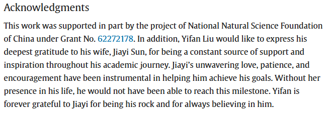

Interests
My research interests span low-level vision and 3D modeling, including image restoration under challenging conditions such as haze, rain, snow, reflection, and underwater distortion. I also explore adversarial attacks in vision systems, multi-view 3D reconstruction, and multimodal large language models.
Technically, I'm proficient in Python, MATLAB, and C/C++, and experienced with PyTorch, Git, Linux/Windows environments, and common scientific computing tools such as NumPy and Selenium. I actively work on geometric perception and vision tasks requiring robustness and cross-domain generalization. Languages: Mandarin (native), English (fluent), Japanese (intermediate).
🕹️ When I'm not wrangling neural networks or taming satellite images into 3D meshes, I'm probably stuck somewhere between Lordran and Night City. A lifelong anime and game enthusiast, I find inspiration in the bizarre poses of JoJo's Bizarre Adventure, the intensity of Attack on Titan, and the glorious chaos of Chainsaw Man and Cyberpunk: Edgerunners.
🎮 From World of Warcraft raids to dying repeatedly in Elden Ring, Dark Souls, and Sekiro (on purpose, of course), I embrace the challenge. You'll also find me exploring dungeons in The Binding of Isaac, mining in Terraria, causing mayhem in GTA, or being a lone wolf in The Witcher and Fallout.
💍 Also, eternal thanks to my wife
Jiayi Sun

— my favorite player two in this wild open-world adventure.